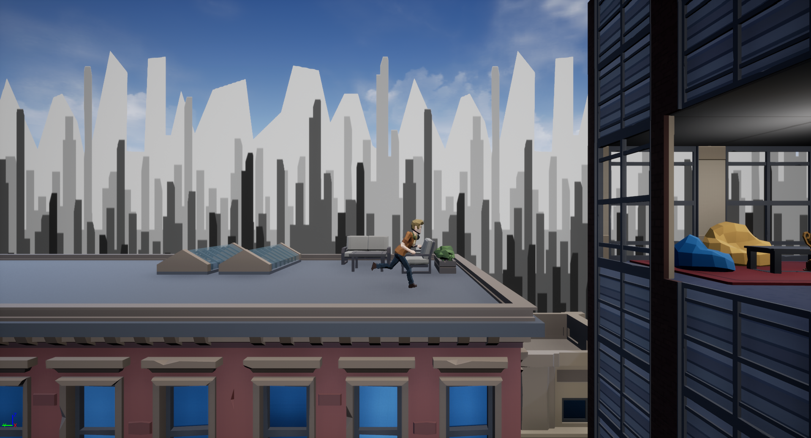
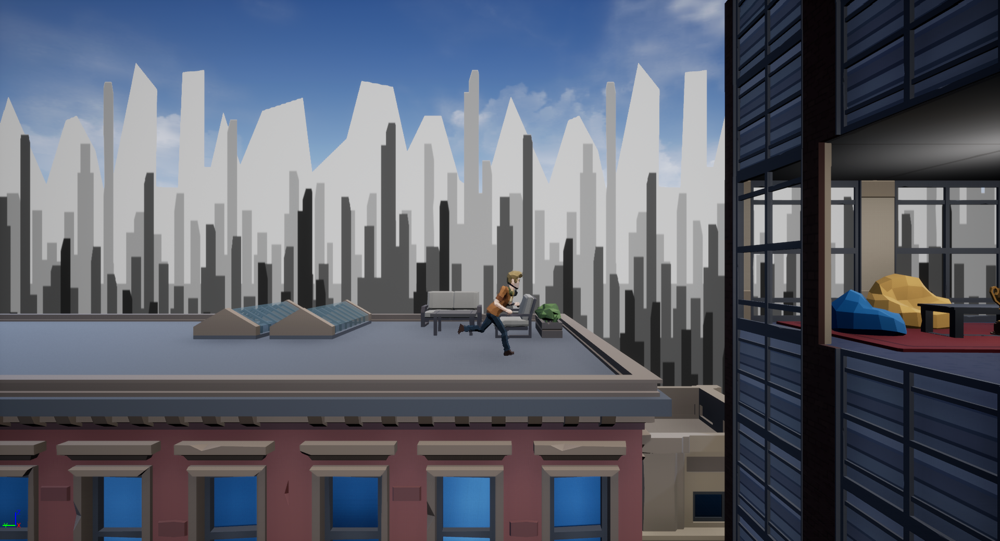

Ashley Barrell
About Me
I'm Ashley and I'm a final year student studying Computer Games Programming at Staffordshire University.
This is my online portfolio where you can find my personal projects, previous projects and résumé. You can also find my blog where I talk about projects I'm working on, games, tech and other random things that might be on my mind.